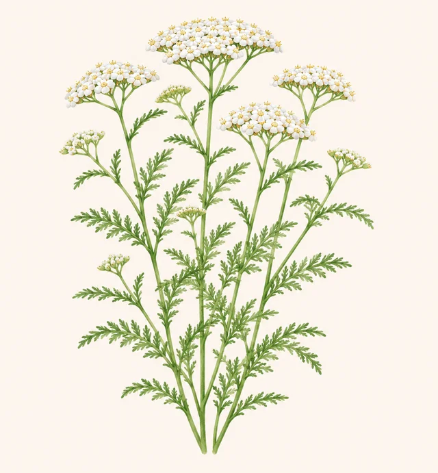

<!doctype html>
<html lang="en">
<head>
<meta charset="utf-8">
<meta name="viewport" content="width=1440">
<title>Knowledge Workspace — 02A.1 mock-up</title>
<link rel="preconnect" href="https://fonts.googleapis.com">
<link href="https://fonts.googleapis.com/css2?family=Bricolage+Grotesque:opsz,wght@12..96,500;12..96,600;12..96,700&family=DM+Sans:ital,opsz,wght@0,9..40,400;0,9..40,500;0,9..40,600;1,9..40,400;1,9..40,500&family=DM+Mono:wght@400&display=swap" rel="stylesheet">
<style>
:root {
  --ivory: #f7f3ea; --ivory-2: #efe9db; --paper: #fffdf8; --paper-2: #f3eee3; --plate: #fffef7;
  --olive-deep: #3b5538; --olive: #5b7a57; --olive-soft: #dfe6d7; --sage: #8c9c82;
  --caramel: #b7894d; --caramel-ink: #8a5f1c; --caramel-soft: #f1e3cb; --rust: #b04f36; --rust-soft: #f2dcd4;
  --blue: #3f6e8c; --blue-soft: #dbe6ee; --plum: #7a5a8c;
  --ink: #27241f; --ink-2: #5c5648; --ink-3: #8a8474; --line: rgba(39,36,31,.12); --line-2: rgba(39,36,31,.24);
  --display: "Bricolage Grotesque", "DM Sans", -apple-system, sans-serif; --sans: "DM Sans", -apple-system, "Helvetica Neue", sans-serif; --mono: "DM Mono", ui-monospace, monospace;
}
* { box-sizing: border-box; }
html, body { margin: 0; width: 1440px; height: 900px; overflow: hidden; background: var(--ivory); color: var(--ink); font: 13px/1.45 var(--sans); }
.app { display: grid; grid-template-rows: 56px 1fr; grid-template-columns: 240px 1fr var(--insp, 0px); height: 900px; }
.app.with-insp { --insp: 352px; }
/* top bar */
.top { grid-column: 1 / -1; display: flex; align-items: center; gap: 28px; padding: 0 20px 0 22px; border-bottom: 1px solid var(--line); background: var(--paper); }
.brand { font: 600 17px/1 var(--display); letter-spacing: -.01em; }
.nav { display: flex; gap: 22px; height: 56px; align-items: stretch; }
.nav span { display: flex; align-items: center; color: var(--ink-2); font-weight: 500; border-bottom: 2px solid transparent; }
.nav span.on { color: var(--ink); border-bottom-color: var(--olive-deep); }
.search { margin-left: 18px; flex: 0 1 420px; height: 34px; border: 1px solid var(--line-2); border-radius: 9px; background: var(--ivory); display: flex; align-items: center; gap: 8px; padding: 0 12px; color: var(--ink-3); }
.spacer { flex: 1; }
.changes { color: var(--ink-2); font-size: 12.5px; display: flex; align-items: center; gap: 6px; }
.changes b { background: var(--rust-soft); color: var(--rust); border-radius: 999px; padding: 1px 8px; font-weight: 600; }
.btn { border: 1px solid var(--line-2); background: var(--paper); border-radius: 9px; padding: 7px 13px; font-weight: 500; white-space: nowrap; display: inline-flex; gap: 6px; align-items: center; }
.btn.primary { background: var(--olive-deep); border-color: var(--olive-deep); color: #fff; }
.btn.small { padding: 4px 10px; font-size: 12px; border-radius: 7px; }
.btn.ghost { border-color: transparent; background: transparent; color: var(--ink-2); }
/* rail */
.rail { border-right: 1px solid var(--line); background: var(--paper-2); padding: 18px 12px 14px 14px; overflow: hidden; display: flex; flex-direction: column; }
.rail h6 { margin: 0 0 8px 8px; font: 600 10.5px/1 var(--sans); letter-spacing: .09em; text-transform: uppercase; color: var(--ink-3); }
.col { border-radius: 10px; padding: 9px 10px 9px 10px; margin-bottom: 3px; }
.col .row1 { display: flex; align-items: center; gap: 9px; font-weight: 600; font-size: 13.5px; }
.col .row1 .n { margin-left: auto; font-weight: 500; font-size: 12px; color: var(--ink-3); }
.col .sub { color: var(--ink-2); font-size: 12px; margin: 2px 0 0 27px; }
.col.on { background: var(--paper); box-shadow: 0 1px 0 var(--line), 0 0 0 1px var(--line); }
.col .ico { width: 18px; height: 18px; color: var(--olive); flex: none; }
.items { margin: 7px 0 2px 27px; display: grid; gap: 3px; }
.items div { display: flex; align-items: center; gap: 7px; font-size: 12px; color: var(--ink-2); padding: 3px 6px; border-radius: 6px; }
.items div .n { margin-left: auto; color: var(--ink-3); font-family: var(--mono); font-size: 11px; }
.items div.on { background: var(--olive-soft); color: var(--ink); font-weight: 500; }
.items div.muted { color: var(--ink-3); }
.mine-dot { width: 7px; height: 7px; border-radius: 50%; background: var(--rust); display: inline-block; }
.glyph { width: 12px; height: 12px; flex: none; }
.railfoot { margin-top: auto; font-size: 11px; color: var(--ink-3); padding: 0 8px; }
/* main */
.main { position: relative; overflow: hidden; display: flex; flex-direction: column; min-width: 0; }
.head { padding: 18px 26px 10px; display: flex; align-items: flex-end; gap: 18px; }
.head h1 { margin: 0; font: 600 27px/1.1 var(--display); letter-spacing: -.015em; }
.head .lede { color: var(--ink-2); font-size: 13px; margin-top: 5px; max-width: 640px; }
.seg { display: inline-flex; background: var(--ivory-2); border-radius: 9px; padding: 3px; }
.seg span { white-space: nowrap; padding: 5px 12px; border-radius: 7px; color: var(--ink-2); font-weight: 500; font-size: 12.5px; }
.seg span.on { background: var(--paper); color: var(--ink); box-shadow: 0 1px 2px rgba(0,0,0,.08); }
.chips { display: flex; gap: 6px; padding: 0 26px 10px; align-items: center; flex-wrap: wrap; }
.chip { display: inline-flex; align-items: center; gap: 6px; border: 1px solid var(--line-2); border-radius: 999px; padding: 3px 10px; font-size: 12px; color: var(--ink-2); background: var(--paper); }
.chip.on { color: var(--ink); }
.chip i { width: 8px; height: 8px; border-radius: 50%; display: inline-block; }
.chip.off { opacity: .55; }
.label-s { font-size: 11px; color: var(--ink-3); letter-spacing: .04em; text-transform: uppercase; font-weight: 600; }
.canvas { flex: 1; position: relative; margin: 0 20px; border: 1px solid var(--line); border-radius: 14px; background: var(--paper); overflow: hidden; min-height: 0; }
svg text { font-family: var(--sans); }
.sci { font-style: italic; }
.band { display: grid; grid-template-columns: repeat(3, 1fr); gap: 0; margin: 10px 20px 16px; border: 1px solid var(--line); border-radius: 12px; background: var(--paper); }
.band > div { padding: 11px 14px; border-left: 1px solid var(--line); font-size: 12px; color: var(--ink-2); }
.band > div:first-child { border-left: 0; }
.band b { color: var(--ink); font-weight: 600; }
.band .bt { font: 600 11px/1 var(--sans); letter-spacing: .07em; text-transform: uppercase; color: var(--ink-3); margin-bottom: 7px; display: flex; gap: 6px; align-items: center; }
.grp { margin-bottom: 5px; line-height: 1.35; }
.grp .sw { display: inline-block; width: 9px; height: 9px; border-radius: 3px; margin-right: 6px; vertical-align: -1px; }
.legend { position: absolute; left: 14px; bottom: 12px; display: flex; gap: 14px; font-size: 11px; color: var(--ink-2); background: rgba(255,253,248,.92); padding: 6px 10px; border-radius: 8px; border: 1px solid var(--line); }
.legend span { display: inline-flex; align-items: center; gap: 6px; }
/* inspector */
.insp { border-left: 1px solid var(--line); background: var(--paper); overflow: hidden; display: flex; flex-direction: column; }
.insp .ih { padding: 16px 18px 12px; border-bottom: 1px solid var(--line); }
.insp .kind { font: 600 10.5px/1 var(--sans); letter-spacing: .09em; text-transform: uppercase; color: var(--ink-3); display: flex; gap: 8px; align-items: center; }
.insp h2 { margin: 7px 0 3px; font: 600 19px/1.2 var(--display); }
.insp .ib { padding: 12px 18px; overflow: hidden; flex: 1; }
.badge { display: inline-flex; gap: 5px; align-items: center; font-size: 11px; border-radius: 999px; padding: 2px 8px; border: 1px solid var(--line-2); color: var(--ink-2); background: var(--paper); }
.badge.mine { border-color: rgba(176,79,54,.45); background: var(--rust-soft); color: var(--rust); }
.badge.full { border-color: rgba(59,85,56,.35); background: var(--olive-soft); color: var(--olive-deep); }
.sec { margin: 12px 0; }
.sec h5 { margin: 0 0 6px; font: 600 11px/1 var(--sans); letter-spacing: .07em; text-transform: uppercase; color: var(--ink-3); display: flex; align-items: center; gap: 6px; }
.kv { display: grid; grid-template-columns: 86px 1fr; gap: 3px 10px; font-size: 12px; }
.kv dt { color: var(--ink-3); } .kv dd { margin: 0; }
.species { display: grid; grid-template-columns: 58px 1fr; gap: 10px; align-items: center; background: var(--ivory); border-radius: 10px; padding: 8px; }
.species img { width: 58px; height: 58px; object-fit: contain; background: var(--plate); border-radius: 8px; }
.mrow { display: grid; grid-template-columns: 96px 1fr; gap: 8px; align-items: center; font-size: 11px; color: var(--ink-2); margin: 3px 0; }
.months { display: grid; grid-template-columns: repeat(12, 1fr); gap: 1.5px; }
.months i { height: 8px; border-radius: 1.5px; background: var(--ivory-2); }
.months i.on { background: var(--sage); }
.mhead { display: grid; grid-template-columns: repeat(12, 1fr); font-size: 9.5px; color: var(--ink-3); text-align: center; }
.quote { border-left: 2px solid var(--caramel); padding: 2px 0 2px 9px; margin: 5px 0; font-size: 12px; color: var(--ink-2); }
.quote .who { display: block; font-size: 10.5px; color: var(--ink-3); margin-top: 1px; }
.details { border-top: 1px solid var(--line); padding: 9px 0 0; margin-top: 8px; color: var(--ink-3); font-size: 12px; display: flex; justify-content: space-between; }
.details + .details { padding-top: 7px; margin-top: 7px; }
.ok { background: #eef2e6; border: 1px solid #cbd7b5; color: #3d5524; border-radius: 9px; padding: 8px 11px; font-size: 12px; display: flex; gap: 8px; align-items: flex-start; }
.note { background: #fdf6f1; border: 1px solid rgba(176,79,54,.35); border-radius: 10px; padding: 10px 12px; }
.note p { margin: 4px 0 6px; font-size: 13px; line-height: 1.45; }
.example { font-size: 10px; letter-spacing: .06em; text-transform: uppercase; color: var(--rust); font-weight: 600; }
.changed li { margin: 3px 0; }
.changed { margin: 0; padding-left: 16px; font-size: 12px; color: var(--ink-2); }
/* composition */
.comp { padding: 8px 14px 4px; }
.layer { display: grid; grid-template-columns: 104px 1fr; gap: 10px; padding: 5px 0; border-top: 1px dashed var(--line); }
.layer:first-child { border-top: 0; }
.layer .lh b { display: block; font: 600 12.5px/1.2 var(--display); }
.layer .lh span { font-size: 10.5px; color: var(--ink-3); }
.tx { display: flex; flex-wrap: wrap; gap: 3px 4px; align-content: flex-start; }
.t { display: inline-flex; align-items: center; gap: 4px; height: 20px; padding: 0 6px 0 5px; border-radius: 6px; border: 1px solid var(--line); background: var(--ivory); font-size: 10.8px; white-space: nowrap; }
.t.sel { outline: 2px solid var(--ink); outline-offset: 1px; background: var(--paper); }
.t .ob { font-family: var(--mono); font-size: 9.5px; color: var(--caramel-ink); background: var(--caramel-soft); border-radius: 4px; padding: 0 4px; }
.t .pf { width: 14px; height: 14px; border-radius: 50%; object-fit: cover; background: var(--plate); border: 1px solid var(--olive); }
.t.mine { border-color: rgba(176,79,54,.5); }
.matrixbar { height: 22px; border-radius: 7px; background: repeating-linear-gradient(90deg, #e4e8d8 0 6px, #d6ddc6 6px 7px); display: flex; align-items: center; padding: 0 10px; font-size: 11.5px; color: var(--olive-deep); }
.ground { height: 0; border-top: 2px solid #b9ae95; margin: 3px 0 1px 114px; position: relative; }
.ground span { position: absolute; right: 0; top: -14px; font-size: 10px; color: var(--ink-3); }
.cov { display: flex; gap: 5px; padding: 6px 14px 8px; font-size: 11.5px; flex-wrap: wrap; align-items: center; font-size: 12px; color: var(--ink-2); }
.cov .k { border-radius: 7px; padding: 3px 9px; background: var(--ivory); border: 1px solid var(--line); }
.cov .k b { font-variant-numeric: tabular-nums; color: var(--ink); }
.cov .k.zero { color: var(--ink-3); border-style: dashed; }
.obs { padding: 9px 14px 10px; border-top: 1px solid var(--line); }
.obs .ogrid { display: grid; grid-template-columns: 1fr 1fr; column-gap: 22px; margin-top: 5px; }
.obs .orow { display: grid; grid-template-columns: 168px 1fr 30px; gap: 6px; align-items: center; font-size: 11px; margin: 2px 0; }
.obs .bar { height: 10px; border-radius: 3px; background: var(--caramel); opacity: .85; }
.obs .orow.sel { font-weight: 600; }
.obs .orow.sel .bar { background: var(--caramel-ink); opacity: 1; }
.flag { font-size: 10.5px; color: var(--caramel-ink); background: var(--caramel-soft); border-radius: 4px; padding: 0 5px; margin-left: 5px; font-weight: 500; font-style: normal; }
.caption { font-size: 11.5px; color: var(--ink-3); margin-top: 6px; }
/* compare */
.cmp { width: 100%; border-collapse: separate; border-spacing: 0; font-size: 11.5px; table-layout: fixed; }
.cmp th { text-align: left; font-weight: 600; font-size: 10.5px; color: var(--ink-3); letter-spacing: .02em; padding: 10px 7px 8px; border-bottom: 1px solid var(--line-2); background: var(--paper); vertical-align: bottom; }
.cmp td { padding: 6px 7px; border-bottom: 1px solid var(--line); vertical-align: middle; height: 50px; overflow: hidden; }
.cmp tr.hi td { background: #fdf6f1; }
.cmp .nm { font-style: italic; font-weight: 500; }
.dash { color: #c9c2b0; }
.scale { position: relative; width: 84px; height: 20px; }
.scale .ax { position: absolute; left: 0; right: 0; top: 8px; height: 2px; background: var(--ivory-2); border-radius: 2px; }
.scale .pt { position: absolute; top: 4px; width: 10px; height: 10px; border-radius: 50%; background: var(--blue); border: 2px solid var(--paper); margin-left: -5px; }
.scale .rg { position: absolute; top: 7px; height: 4px; background: rgba(63,110,140,.35); border-radius: 3px; }
.scale .lb { position: absolute; top: 15px; font-size: 9px; color: var(--ink-3); }
.mm { display: grid; gap: 2px; width: 112px; }
.mm .months i { height: 5px; }
.cnt { font-family: var(--mono); font-size: 11px; }
.obar { display: flex; align-items: center; gap: 6px; }
.obar i { height: 8px; border-radius: 2px; background: var(--caramel); display: inline-block; }
</style>
</head>
<body>
<div class="app" id="app"></div>
<script src="data.js"></script>
<script>
const M = window.MOCK, S = Number(new URLSearchParams(location.search).get('s') || 1);
const $ = (h) => h;
const esc = s => String(s ?? '').replace(/[&<>"]/g, c => ({ '&': '&amp;', '<': '&lt;', '>': '&gt;', '"': '&quot;' }[c]));
const P = Object.fromEntries(M.plants.map(p => [p.id, p]));
const THEME_COL = { water: '#3f6e8c', tolerance: '#b7894d', ecology: '#5b7a57', light: '#8a7a3c', use: '#b04f36' };
const MONTH = ['J','F','M','A','M','J','J','A','S','O','N','D'];
const ICON = {
  library: '<svg class="ico" viewBox="0 0 20 20"><path d="M10 17V8M10 8c0-3 2-5 5-5 0 3-2 5-5 5Zm0 3C10 8 8 6 5 6c0 3 2 5 5 5Z" fill="none" stroke="currentColor" stroke-width="1.5" stroke-linejoin="round"/></svg>',
  survey: '<svg class="ico" viewBox="0 0 20 20"><path d="M4 5h12v8H9l-4 3v-3H4z" fill="none" stroke="currentColor" stroke-width="1.5" stroke-linejoin="round"/></svg>',
  research: '<svg class="ico" viewBox="0 0 20 20"><path d="M4 16V9M8 16V5M12 16v-5M16 16V7" stroke="currentColor" stroke-width="1.7" stroke-linecap="round"/></svg>',
  recipes: '<svg class="ico" viewBox="0 0 20 20"><path d="M3 15h14M5 15V9M8 15V6M11 15V10M14 15V7" stroke="currentColor" stroke-width="1.5" stroke-linecap="round"/><circle cx="8" cy="5" r="1.6" fill="currentColor"/><circle cx="14" cy="6" r="1.6" fill="currentColor"/></svg>',
  local: '<svg class="ico" viewBox="0 0 20 20"><path d="M10 17s5-4.6 5-8.5A5 5 0 0 0 5 8.5C5 12.4 10 17 10 17Z" fill="none" stroke="currentColor" stroke-width="1.5"/><circle cx="10" cy="8.5" r="1.8" fill="currentColor"/></svg>',
  mine: '<svg class="ico" viewBox="0 0 20 20" style="color:var(--rust)"><path d="M5 15l1-4 7-7 3 3-7 7z M12 5l3 3" fill="none" stroke="currentColor" stroke-width="1.5" stroke-linejoin="round"/></svg>',
};
const glyph = k => ({
  full: '<svg class="glyph" viewBox="0 0 12 12"><circle cx="6" cy="6" r="5" fill="#dfe6d7" stroke="#3b5538" stroke-width="1.4"/><circle cx="6" cy="6" r="2" fill="#3b5538"/></svg>',
  plan: '<svg class="glyph" viewBox="0 0 12 12"><circle cx="6" cy="6" r="4.6" fill="none" stroke="#8a8474" stroke-width="1.3"/></svg>',
  cand: '<svg class="glyph" viewBox="0 0 12 12"><circle cx="6" cy="6" r="4.6" fill="none" stroke="#8a8474" stroke-width="1.3" stroke-dasharray="2 1.6"/></svg>',
  mine: '<svg class="glyph" viewBox="0 0 12 12"><circle cx="6" cy="6" r="4.6" fill="#f2dcd4" stroke="#b04f36" stroke-width="1.5"/></svg>',
}[k]);

function topBar() {
  return `<header class="top"><div class="brand">Generative Planting</div><nav class="nav"><span>Design</span><span class="on">Knowledge</span></nav>
    <div class="search"><svg width="15" height="15" viewBox="0 0 20 20"><circle cx="8.5" cy="8.5" r="5.5" fill="none" stroke="currentColor" stroke-width="1.6"/><path d="m13 13 4 4" stroke="currentColor" stroke-width="1.6"/></svg>Search plants, places, research or notes…</div>
    <div class="spacer"></div>${S === 3 ? '<span class="changes">Your changes <b>1</b></span>' : ''}<span class="btn primary">+ Add knowledge</span></header>`;
}

function rail() {
  const C = M.collections; const mine = S === 3 ? 1 : 0;
  const col = (key, title, n, sub, items = '', on = false) => `<div class="col ${on ? 'on' : ''}"><div class="row1">${ICON[key]}${title}<span class="n">${n}</span></div>${sub ? `<div class="sub">${sub}</div>` : ''}${items}</div>`;
  const lib = col('library', 'Plant Library', C.library.full + C.library.planTaxa + C.library.candidates + mine, '', `<div class="items">
      <div class="${S === 1 ? 'on' : ''}">${glyph('full')}Full profiles<span class="n">${C.library.full}</span></div>
      <div>${glyph('plan')}Named in a plan or list<span class="n">${C.library.planTaxa}</span></div>
      <div>${glyph('cand')}Survey candidates<span class="n">${C.library.candidates}</span></div>
      <div class="${mine ? '' : 'muted'}">${glyph('mine')}Added by me<span class="n">${mine}</span></div></div>`, S === 1);
  const rec = col('recipes', 'Planting Recipes', C.recipes.recipes, 'Oudolf Garden Detroit', S === 1 ? '' : `<div class="items">${M.recipeList.map(r => `<div class="${r.id === M.recipe.id ? 'on' : ''} ${r.members ? '' : 'muted'}">${esc(r.name.replace(' — ', ' · '))}<span class="n">${r.members || '–'}</span></div>`).join('')}</div>`, S !== 1);
  return `<aside class="rail"><h6>Collections</h6>${lib}
    ${col('survey', 'Survey', C.survey.respondents + ' people', `${C.survey.statements} statements · ${C.survey.beyondLibrary} plants beyond the library`)}
    ${col('research', 'Research', 2, `Robertson 1929 · ${C.research.robertsonPlants} plants<br>Design literature · ${C.research.literatureRelations} concept links`)}
    ${rec}
    ${col('local', 'Local Data', 4, `Metro Vancouver water rules · ${C.local.water}<br>Street trees ${C.local.cov_trees} · iNaturalist ${C.local.inat} · E-Flora BC ${C.local.eflora}`)}
    ${col('mine', 'Personal Knowledge', mine || '', mine ? '<span class="mine-dot"></span> 1 practice note · just now' : 'Nothing yet — notes, tables and edits you add land here')}
    <div class="railfoot">Base: Planting Intelligence knowledge, 17 Nov · Detroit plan 2019–20</div></aside>`;
}

// ---------------------------------------------------------------- screen 1
function screen1() {
  const hubs = M.hubs.filter(h => M.defaultThemes.includes(h.theme));
  const W = 1120, H = 520;
  const L = layout(hubs, W, H); const xy = id => L[id];
  let svg = `<svg width="100%" height="100%" viewBox="0 0 ${W} ${H}" preserveAspectRatio="xMidYMid meet"><defs>${M.plants.map(p => `<clipPath id="c-${p.id}"><circle r="27"/></clipPath>`).join('')}</defs>`;
  // topical groups (derived analysis, drawn as soft areas, not links)
  const tints = ['rgba(63,110,140,.09)', 'rgba(183,137,77,.11)', 'rgba(91,122,87,.12)'];
  M.clusters.forEach((c, i) => {
    const pts = c.plants.map(xy);
    const d = pts.length === 1 ? `M${pts[0][0]},${pts[0][1]}Z` : hull(pts).map((p, j) => (j ? 'L' : 'M') + p[0].toFixed(1) + ',' + p[1].toFixed(1)).join('') + 'Z';
    svg += `<path d="${d}" fill="${tints[i]}" stroke="${tints[i]}" stroke-width="150" stroke-linejoin="round" stroke-linecap="round"/>`;
  });
  for (const h of hubs) for (const p of h.plants) {
    const [x1, y1] = xy(h.id), [x2, y2] = xy(p); const n = h.sources[p].length;
    svg += `<line x1="${x1}" y1="${y1}" x2="${x2}" y2="${y2}" stroke="${THEME_COL[h.theme]}" stroke-opacity=".38" stroke-width="${(0.7 + n * 0.55).toFixed(2)}"/>`;
  }
  for (const c of M.colisted) { const [x1, y1] = xy(c.a), [x2, y2] = xy(c.b); svg += `<line x1="${x1}" y1="${y1}" x2="${x2}" y2="${y2}" stroke="#7a5a8c" stroke-width="1.1" stroke-dasharray="3 4" stroke-opacity=".55"/>`; }
  for (const h of hubs) {
    const [x, y] = xy(h.id); const label = h.label; const n = h.plants.length; const w = label.length * 6.4 + 30;
    svg += `<g transform="translate(${x},${y})"><rect x="${-w / 2}" y="-11" width="${w}" height="22" rx="11" fill="#fffdf8" stroke="${THEME_COL[h.theme]}" stroke-width="1.3"/>
      <text text-anchor="middle" y="4" font-size="11.5" fill="#27241f">${esc(label)} <tspan fill="${THEME_COL[h.theme]}" font-weight="600">${n}</tspan></text></g>`;
  }
  for (const p of M.plants) {
    const [x, y] = xy(p.id);
    svg += `<g transform="translate(${x},${y})"><circle r="30" fill="#fffef7" stroke="#3b5538" stroke-width="1.6"/><image href="${p.art}" x="-27" y="-27" width="54" height="54" clip-path="url(#c-${p.id})" preserveAspectRatio="xMidYMid slice"/>
      <text y="45" text-anchor="middle" font-size="13" font-weight="600" fill="#27241f" style="font-family:'Bricolage Grotesque'">${esc(p.common)}</text>
      <text y="59" text-anchor="middle" font-size="10.5" font-style="italic" fill="#5c5648">${esc(p.name)}</text></g>`;
  }
  svg += '</svg>';
  const tlist = Object.entries(M.themes).map(([k, v]) => `<span class="chip ${M.defaultThemes.includes(k) ? 'on' : 'off'}"><i style="background:${THEME_COL[k]}"></i>${v}</span>`).join('');
  const sw = ['rgba(63,110,140,.55)', 'rgba(183,137,77,.6)', 'rgba(91,122,87,.6)'];
  const groups = M.clusters.map((c, i) => `<div class="grp"><span class="sw" style="background:${sw[i]}"></span><b>${c.plants.map(p => P[p].common).join(', ')}</b><br><span style="margin-left:15px">share ${c.sharedBy.join(' · ')}</span></div>`).join('');
  const gapPlants = M.gaps.filter(g => g.theme === 'Ecology').map(g => P[g.plant].common);
  return `<main class="main">
    <div class="head"><div><h1>Plant Library</h1><div class="lede">How the ten fully documented plants connect through what their sources record. Every line is a record; nothing is drawn to fill a gap.</div></div>
      <div class="spacer"></div><div class="seg"><span class="on">Network</span><span>Compare</span><span>Profiles</span></div></div>
    <div class="chips"><span class="label-s" style="margin-right:4px">Show shared</span>${tlist}<span class="spacer"></span>
      <span class="chip">${glyph('full')} 10 full profiles</span><span class="chip off">${glyph('plan')} + plan taxa</span></div>
    <div class="canvas">${svg}<div class="legend"><span><svg width="26" height="8"><line x1="0" y1="4" x2="26" y2="4" stroke="#5b7a57" stroke-opacity=".6" stroke-width="2.4"/></svg>recorded by sources (thicker = more sources)</span>
      <span><svg width="26" height="8"><line x1="0" y1="4" x2="26" y2="4" stroke="#7a5a8c" stroke-width="1.3" stroke-dasharray="4 4"/></svg>listed together by a designer (survey)</span><span>shaded areas = topical groups</span></div></div>
    <div class="band"><div><div class="bt">Topical groups · from shared records</div>${groups}</div>
      <div><div class="bt">Gaps</div><div class="grp">No shared <b>ecology</b> record: ${gapPlants.join(', ')}.</div><div class="grp">Pollinator observations exist for <b>Yarrow</b> only (Robertson 1929, Illinois).</div><div class="grp">No flowering data for <b>${M.collections.library.planTaxa}</b> plan taxa.</div></div>
      <div><div class="bt">Common to almost all ten · not drawn</div><div class="grp">${M.commonGround.map(c => `${esc(c.label)} <span style="color:var(--ink-3)">${c.plants}</span>`).join(' · ')}</div><div class="grp" style="color:var(--ink-3)">Links shared by 8+ of 10 plants would only add clutter; they stay in each profile.</div></div></div>
  </main>`;
}

// structured layout: plants by topical group, each shared concept between the plants that carry it (layout only — never data)
function layout(hubs, W, H) {
  const pos = {}, gOf = {};
  const centres = [[575, 236], [205, 228], [940, 232]];
  const R = [[205, 172], [112, 128], [70, 138]];
  M.clusters.forEach((c, gi) => {
    const n = c.plants.length;
    c.plants.forEach((p, i) => { const a = -Math.PI / 2 + (i + .5) * 2 * Math.PI / n + (gi === 2 ? Math.PI / 2 : 0);
      pos[p] = [centres[gi][0] + Math.cos(a) * R[gi][0], centres[gi][1] + Math.sin(a) * R[gi][1]]; gOf[p] = gi; });
  });
  const hp = hubs.map(h => {
    const m = h.plants.map(p => pos[p]); let x = m.reduce((a, b) => a + b[0], 0) / m.length, y = m.reduce((a, b) => a + b[1], 0) / m.length;
    const gs = new Set(h.plants.map(p => gOf[p]));
    if (gs.size === 1) {                        // belongs to one group: sit on that group's outer edge, not in the crossing zone
      const g = [...gs][0], [cx, cy] = centres[g]; let dx = x - cx, dy = y - cy; const d = Math.hypot(dx, dy);
      if (d < 8) { dx = 0; dy = -1; } else { dx /= d; dy /= d; }
      x = cx + dx * (R[g][0] + 40); y = cy + dy * (R[g][1] + 48);
    }
    return { id: h.id, x, y, tx: x, ty: y, w: h.label.length * 6.4 + 34 };
  });
  const boxes = Object.values(pos).map(([x, y]) => [x - 34, y - 34, x + 34, y + 34], []).concat(Object.values(pos).map(([x, y]) => [x - 102, y + 30, x + 102, y + 66]));
  for (let it = 0; it < 700; it++) {
    for (const a of hp) {
      a.x += (a.tx - a.x) * .03; a.y += (a.ty - a.y) * .03;
      for (const [x0, y0, x1, y1] of boxes) {             // keep hub pills off plant discs and plant labels
        const ox = Math.min(a.x + a.w / 2, x1) - Math.max(a.x - a.w / 2, x0), oy = Math.min(a.y + 12, y1) - Math.max(a.y - 12, y0);
        if (ox > 0 && oy > 0) { if (ox < oy) a.x += (a.x < (x0 + x1) / 2 ? -1 : 1) * ox * .5; else a.y += (a.y < (y0 + y1) / 2 ? -1 : 1) * oy * .5; }
      }
      for (const b of hp) if (a !== b) { const dx = a.x - b.x, dy = a.y - b.y; const ox = (a.w + b.w) / 2 + 10 - Math.abs(dx), oy = 30 - Math.abs(dy);
        if (ox > 0 && oy > 0) { if (ox < oy * 2.5) a.x += Math.sign(dx || 1) * ox * .3; else a.y += Math.sign(dy || 1) * oy * .3; } }
      a.x = Math.max(a.w / 2 + 12, Math.min(W - a.w / 2 - 12, a.x)); a.y = Math.max(22, Math.min(H - 26, a.y));
    }
  }
  for (const a of hp) pos[a.id] = [a.x, a.y];
  return pos;
}

function hull(pts) {
  const p = pts.slice().sort((a, b) => a[0] - b[0] || a[1] - b[1]);
  const cr = (o, a, b) => (a[0] - o[0]) * (b[1] - o[1]) - (a[1] - o[1]) * (b[0] - o[0]);
  const lo = [], up = [];
  for (const q of p) { while (lo.length >= 2 && cr(lo[lo.length - 2], lo[lo.length - 1], q) <= 0) lo.pop(); lo.push(q); }
  for (const q of p.slice().reverse()) { while (up.length >= 2 && cr(up[up.length - 2], up[up.length - 1], q) <= 0) up.pop(); up.push(q); }
  return lo.slice(0, -1).concat(up.slice(0, -1));
}

// ---------------------------------------------------------------- screen 2 / 3 (recipe)
const ROLE_LABEL = { emergent: ['Emergents', 'rise above the mix'], scatter: ['Scatter', 'single plants'], group: ['Groups', 'repeated clumps'], matrix: ['Matrix', 'continuous base'],
  'bulb-scatter': ['Bulbs · scatter', ''], 'bulb-cluster': ['Bulbs · cluster', ''], 'bulb-line': ['Bulbs · line', ''], 'bulb-drift': ['Bulbs · drift', ''] };
const SEL = "taxon:achillea-millefolium-terra-cotta";
function taxonChip(m) {
  const yar = m.speciesProfile === 'achillea-millefolium';
  const g = m.speciesProfile ? `` : glyph('plan');
  const nm = m.type === 'cultivar' ? esc(m.name).replace(/'([^']+)'$/, "<span style=\"font-style:normal\">'$1'</span>") : esc(m.name);
  return `<span class="t ${m.id === SEL ? 'sel' : ''} ${S === 3 && yar ? 'mine' : ''}">${g}<span class="sci">${nm}</span>${m.robertson ? `<span class="ob" title="insect taxa listed by Robertson">${m.robertson}</span>` : ''}${S === 3 && yar ? '<span class="mine-dot"></span>' : ''}</span>`;
}
function composition() {
  const R = Object.fromEntries(M.recipe.roles.map(r => [r.role, r.members]));
  const above = ['emergent', 'scatter', 'group'];
  const bulbs = M.recipe.roles.filter(r => r.role.startsWith('bulb')).flatMap(r => r.members.map(m => ({ ...m, sub: r.role.replace('bulb-', '') })));
  let h = '<div class="comp">';
  for (const k of above) h += `<div class="layer"><div class="lh"><b>${ROLE_LABEL[k][0]} · ${R[k].length}</b><span>${ROLE_LABEL[k][1]}</span></div><div class="tx">${R[k].map(taxonChip).join('')}</div></div>`;
  h += `<div class="layer"><div class="lh"><b>Matrix · 1</b><span>continuous base</span></div><div><div class="matrixbar"><span class="sci">${esc(R.matrix[0].name)}</span>&nbsp;— documented matrix grass of the B beds</div></div></div>`;
  h += `<div class="ground"><span>ground</span></div>`;
  h += `<div class="layer" style="border-top:0"><div class="lh"><b>Bulbs · ${bulbs.length}</b><span>scatter · cluster · line · drift</span></div><div class="tx">${bulbs.map(taxonChip).join('')}</div></div></div>`;
  return h;
}
function coverage() {
  const all = M.recipe.roles.flatMap(r => r.members); const n = new Set(all.map(m => m.id)).size;
  const prof = new Set(all.filter(m => m.speciesProfile).map(m => m.id)).size, rob = new Set(all.filter(m => m.robertson).map(m => m.id)).size;
  return `<div class="cov"><span class="label-s">Knowledge for these ${n} taxa</span><span class="k"><b>${prof}</b> with a species profile</span><span class="k"><b>${rob}</b> with pollinator observations</span><span class="k zero"><b>0</b> flowering records</span><span class="k zero"><b>0</b> ecological roles</span></div>`;
}
function observations(compact) {
  const max = Math.max(...M.robertson.map(x => x.count));
  return `<div class="obs"><div style="display:flex;align-items:baseline;gap:10px"><b style="font:600 14px var(--display)">Flower visitors recorded</b><span class="caption" style="margin:0">insect taxa listed per plant · Robertson 1929, Carlinville, Illinois</span></div>
    <div class="ogrid">${M.robertson.map(x => `<div class="orow ${x.name.includes('Terra Cotta') ? 'sel' : ''}"><span class="sci">${esc(x.name)}${x.via === 'species' ? '<span class="flag">species</span>' : ''}${x.name.startsWith('Pycnanthemum flexuosum') ? '<span class="flag">check name</span>' : ''}</span><div class="bar" style="width:${(x.count / max * 100).toFixed(1)}%"></div><span class="cnt">${x.count}</span></div>`).join('')}</div>
    <div class="caption">Presence lists from Robertson's 1884–1916 field work — not visit rates, not Detroit. “check name”: a 1929 name matched by spelling only. ${46 - M.robertson.length} of 46 taxa have no observation in the base.</div></div>`;
}
function inspector2() {
  const y = M.yarrow;
  const season = y.season.map(s => `<div class="mrow"><span>${esc(s.source === 'usda_plants' ? 'USDA' : s.source === 'inat' ? 'iNaturalist' : s.source.toUpperCase())} · ${esc(s.place.replace(', Missouri', '').replace('United Kingdom', 'UK'))}</span><div class="months">${MONTH.map((_, i) => `<i class="${s.months.includes(i + 1) ? 'on' : ''}"></i>`).join('')}</div></div>`).join('');
  const quotes = [y.survey.find(q => q.id.endsWith('vancouver_context:sv02')), y.survey.find(q => /^Spreads/.test(q.text))].filter(Boolean);
  return `<aside class="insp"><div class="ih"><div class="kind">${glyph('plan')} Named in the Detroit plan · cultivar</div><h2><span class="sci">Achillea millefolium</span> 'Terra Cotta'</h2>
      <div style="display:flex;gap:6px;margin-top:6px"><span class="badge">B beds · group</span><span class="badge">legend “Ach”</span></div></div>
    <div class="ib">
      <div class="sec"><h5>In this recipe</h5><div style="font-size:12px;color:var(--ink-2)">Drawn as a <b style="color:var(--ink)">group</b>, sharing the legend code with <span class="sci">Saponaria × lempergii</span> 'Max Frei'. The role holds in this plan only; its ecological role is not recorded.</div></div>
      <div class="sec"><h5>Known about the species</h5>
        <div class="species"><div><b style="font:600 14px var(--display)">Yarrow</b> <span class="badge full" style="margin-left:4px">${glyph('full')} full profile</span><br><span class="sci" style="font-size:12px">Achillea millefolium</span> <span style="font-size:12px;color:var(--ink-3)">· ${y.records} records · ${y.sources} sources</span></div></div>
        <div style="font-size:11.5px;color:var(--ink-3);margin:6px 0 2px">Species knowledge is shown, not copied to the cultivar.</div></div>
      <div class="sec"><h5>Flowering · by source and place</h5><div class="mrow"><span></span><div class="mhead">${MONTH.map(m => `<span>${m}</span>`).join('')}</div></div>${season}</div>
      <div class="sec"><h5>Pollinators</h5><div style="font-size:12px"><b>${y.robertson}</b> insect taxa listed as visitors <span style="color:var(--ink-3)">· Robertson 1929, Illinois</span></div></div>
      <div class="sec"><h5>What designers said · survey</h5>${quotes.map(q => `<div class="quote">“${esc(q.text.replace(/^Yarrow — derived from the respondent's note: /, '').slice(0, 120))}${q.text.length > 120 ? '…' : ''}”<span class="who">respondent ${q.respondent.slice(-2)} · ${({ observation: 'observation', warning: 'caution', selection_reason: 'reason', practitioner_note: 'note' })[q.kind] || q.kind}</span></div>`).join('')}</div>
      <div style="display:flex;gap:6px;margin-top:10px"><span class="btn primary small">+ Add knowledge</span><span class="btn small">Open Yarrow profile</span></div>
      <div class="details"><span>Sources, identifiers & licences</span><span>▸</span></div>
    </div></aside>`;
}
function screen2() {
  return `<main class="main"><div class="head"><div><h1>B beds — Matrix plan</h1><div class="lede">Oudolf Garden Detroit · plan legends 2019–2020 · ${M.recipe.members} taxa. Roles are how plants are drawn in this plan, not ecological roles.</div></div>
      <div class="spacer"></div><div class="seg"><span class="on">Composition</span><span>Compare</span><span>Site</span></div></div>
    <div class="canvas" style="margin-bottom:16px;display:flex;flex-direction:column">${composition()}${coverage()}${observations()}</div></main>${inspector2()}`;
}

// ---------------------------------------------------------------- screen 3 (after adding)
function waterScale(vals) {
  if (!vals.length) return '<span class="dash">none</span>';
  const pos = { dry: 0, average: 50, moist: 100 };
  const pts = vals.filter(v => v in pos).map(v => `<span class="pt" style="left:${pos[v]}%"></span>`).join('');
  const wide = vals.includes('wide range') ? '<span class="rg" style="left:0;right:0"></span>' : '';
  return `<div class="scale"><span class="ax"></span>${wide}${pts}<span class="lb" style="left:0">dry</span><span class="lb" style="right:0">moist</span></div><span style="display:block;margin-top:8px;font-size:9.5px;color:var(--ink-3);white-space:nowrap">average ×3 · wide ×1</span>`;
}
function screen3() {
  const max = Math.max(...M.compare.map(r => r.robertson || 0));
  const rows = M.compare.map(r => {
    const yar = r.name.includes('Terra Cotta');
    const nm = r.type === 'cultivar' ? esc(r.name).replace(/'([^']+)'$/, "<span style=\"font-style:normal\">'$1'</span>") : esc(r.name);
    const season = r.season.length ? `<div class="mm">${r.season.map(s => `<div class="months">${MONTH.map((_, i) => `<i class="${s.months.includes(i + 1) ? 'on' : ''}"></i>`).join('')}</div>`).join('')}</div><span style="font-size:9.5px;color:var(--ink-3)">4 sources · 4 places</span>` : '<span class="dash">none</span>';
    return `<tr class="${yar ? 'hi' : ''}"><td>${r.profile ? '' : glyph('plan') + ' '}<span class="nm">${nm}</span></td>
      <td>${r.role}</td>
      <td>${r.profile ? `<span class="badge full">${glyph('full')} ${r.profileRecords}</span>` : '<span class="dash">—</span>'}</td>
      <td>${r.robertson ? `<div class="obar"><i style="width:${Math.max(3, r.robertson / max * 80)}px"></i><span class="cnt">${r.robertson}</span>${r.name.startsWith('Pycnanthemum flexuosum') ? '<span class="flag">check name</span>' : ''}</div>` : '<span class="dash">—</span>'}</td>
      <td>${season}</td><td>${waterScale(r.water)}</td>
      <td>${r.survey ? `<b>${r.survey}</b> people` : '<span class="dash">—</span>'}</td>
      <td>${yar ? '<span class="badge mine">● 1 note</span>' : '<span class="dash">—</span>'}</td></tr>`;
  }).join('');
  const insp = `<aside class="insp"><div class="ih"><div class="kind" style="color:var(--rust)">${glyph('mine')} Personal knowledge · just added</div><h2>Your note on <span class="sci">Yarrow</span></h2>
      <div style="display:flex;gap:6px;margin-top:6px;flex-wrap:wrap"><span class="badge mine">practice</span><span class="badge">my practice · Metro Vancouver</span></div></div>
    <div class="ib">
      <div class="ok"><span>✓</span><span>Saved to <b>Personal Knowledge</b>. The Base records are unchanged.</span></div>
      <div class="sec note"><div class="example">Example input for this mock-up</div><p>In Vancouver low-irrigation gravel beds I use the species rather than ‘Terra Cotta’. It self-seeds and spreads, so I keep it to dry edges.</p>
        <div style="font-size:11.5px;color:var(--ink-3)">Saved word for word · no automatic extraction</div></div>
      <div class="sec"><h5>About</h5><div style="display:flex;gap:6px;flex-wrap:wrap"><span class="badge full">${glyph('full')} Achillea millefolium · species</span><span class="badge" style="opacity:.6;text-decoration:line-through">'Terra Cotta'</span></div>
        <div style="font-size:11.5px;color:var(--ink-3);margin-top:5px">You chose the species, so the note is not attached to the Detroit cultivar.</div></div>
      <div class="sec"><h5>What changed</h5><ul class="changed"><li>Personal Knowledge <b>0 → 1</b>; Yarrow profile shows it beside the 4 source records on water and drought.</li>
        <li>B beds · Compare marks <span class="sci">'Terra Cotta'</span> through its species link.</li><li>Future AI queries about Yarrow can return it, flagged as <b>designer practice</b>, not a measured trait.</li></ul></div>
      <div style="display:flex;gap:6px;margin-top:10px"><span class="btn small">Edit</span><span class="btn small">Undo</span><span class="btn ghost small">Compare with sources</span></div>
      <div class="details"><span>Record details & history</span><span>▸</span></div>
    </div></aside>`;
  return `<main class="main"><div class="head"><div><h1>B beds — Matrix plan</h1><div class="lede">Taxa of this recipe that have any knowledge in the base, side by side. “none” and dashes are gaps, not negatives.</div></div>
      <div class="spacer"></div><div class="seg"><span>Composition</span><span class="on">Compare</span><span>Site</span></div></div>
    <div class="chips"><span class="chip on">${M.compare.length} of ${M.recipe.members} taxa with knowledge</span><span class="chip off">show all ${M.recipe.members}</span><span class="spacer"></span><span class="label-s">Scope: this recipe</span></div>
    <div class="canvas" style="margin-bottom:16px"><table class="cmp"><colgroup><col style="width:186px"><col style="width:66px"><col style="width:74px"><col style="width:116px"><col style="width:124px"><col style="width:98px"><col style="width:62px"><col></colgroup><thead><tr><th>Taxon</th><th>Role in B</th><th>Species profile</th><th>Flower visitors<br><span style="font-weight:400">taxa · Robertson</span></th><th>Flowering<br><span style="font-weight:400">line per source</span></th><th>Water need<br><span style="font-weight:400">as stated</span></th><th>Designers</th><th>Mine</th></tr></thead><tbody>${rows}</tbody></table>
      <div style="padding:12px 14px;font-size:11.5px;color:var(--ink-3);line-height:1.5"><b style="color:var(--ink-2)">${M.recipe.members - M.compare.length} taxa with no knowledge in the base yet</b> — ${M.recipe.roles.flatMap(r => r.members).filter(m => !M.compare.some(c => c.name === m.name)).slice(0, 9).map(m => `<span class="sci">${esc(m.name)}</span>`).join(', ')} …<br>They stay in the recipe; add a note or import a table to fill them.</div></div></main>${insp}`;
}

document.getElementById('app').className = 'app' + (S > 1 ? ' with-insp' : '');
document.getElementById('app').innerHTML = topBar() + rail() + (S === 1 ? screen1() : S === 2 ? screen2() : screen3());
document.fonts.ready.then(() => document.documentElement.dataset.ready = '1');
</script>
</body>
</html>
